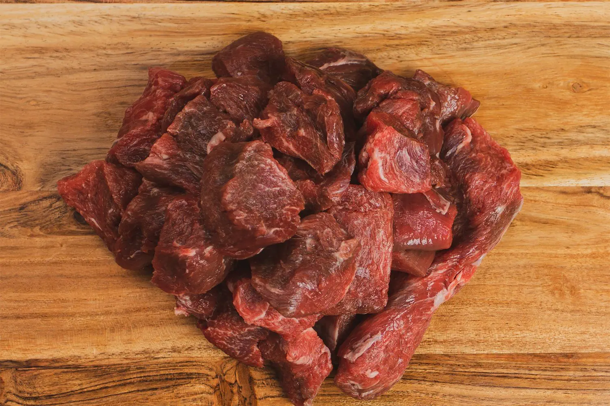
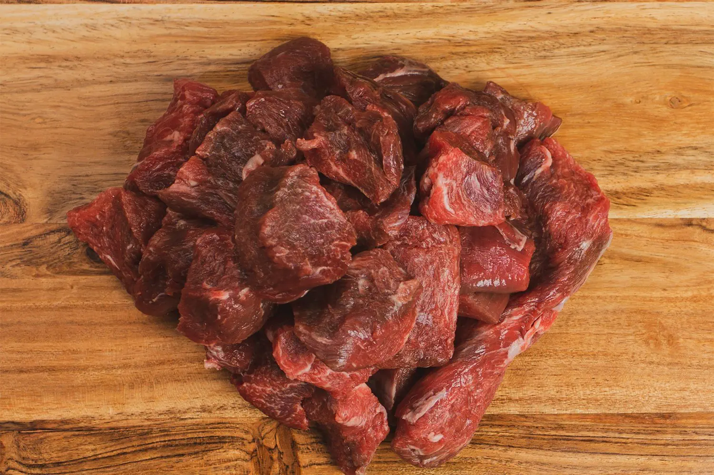

Viltskav i en krämig sås med svamp, lingon och enbär tillsammans med potatismos.
Enkla svenska smaker!
Tillagningstid: 30 min | 3 portioner
Ingredienser
- 240 g fryst ren-, älg-, eller viltskav
- 200 g trattkantareller, kantareller eller champinjoner
- 1 rödlök eller gul lök
- 1 msk smör
- 1/2 tsk peppar
- 2 dl crème fraiche eller grädde
- 1 msk outspädd vinbärssaft eller gelé
- 1 dl vatten
- 1 buljongtärning
- 5 st mortlade torkade enbär
- 1 tsk torkad timjan
- 1/2 msk soja
- 1/2 dl lingon
Gör så här
- Borsta svampen, skär den ev i mindre bitar. Lägg svampen i en stekpanna och låt det mesta av vätskan koka bort.
- Tillsätt fettet, lägg i skav och lök och fräs alltsammans tills skavet fått en stekyta. Salta och peppra.
- Tillsätt crème fraiche eller grädde, vinbärssaft eller gelé, vatten och buljong eller fond, enbär, timjan och soja. Låt allt småputtra några minuter.
- Smaka av med salt och peppar. Rör i lingonen.
- Servers med potatismos, ris, kokt potatis eller pasta och en sallad.
 
